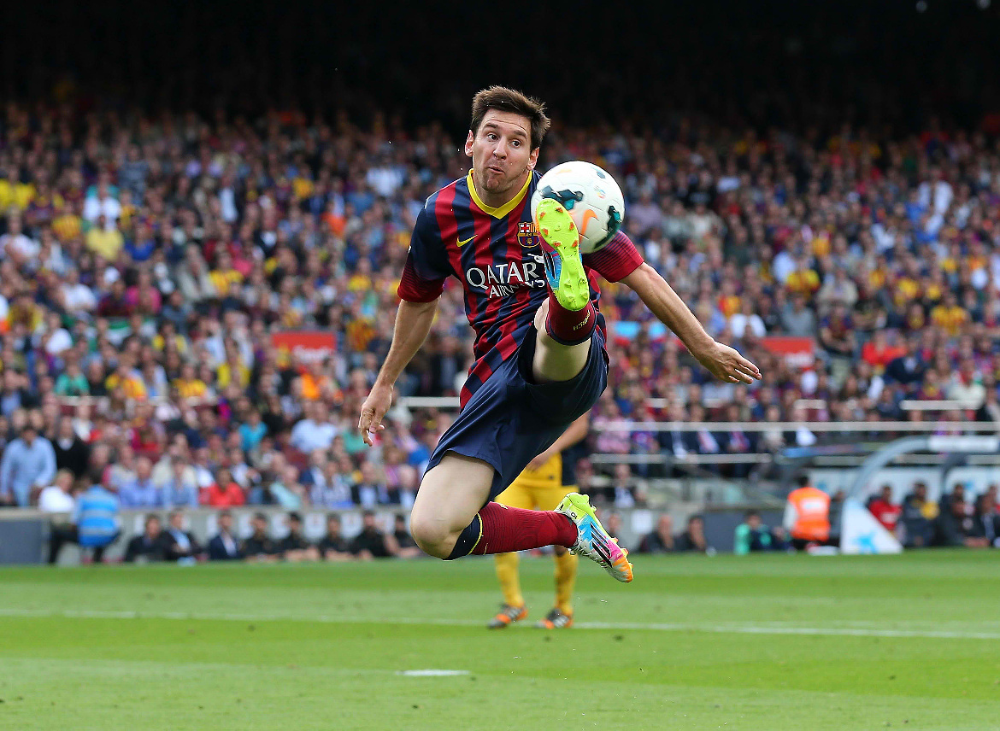

Rychlý, skvěle technicky vybavený křídelní útočník, jehož hlavní zbraní je úspěšnost v soubojích jeden na jednoho a nesmírná univerzálnost...
Rychlý, skvěle technicky vybavený křídelní útočník, jehož hlavní zbraní je úspěšnost v soubojích jeden na jednoho (nebo i proti více bránícím protihráčům) a nesmírná univerzálnost - dokáže se prosadit hlavou, střelou z dálky, ze standartní situace i individuálním průnikem, krom zakončení připravuje množství šancí i pro spoluhráče. Jeden z největších světových talentů posledních let, o čemž svědčí také neustálé srovnávání s legendárním Diegem Maradonou.
Lionel Andrés Messi – tak zní celé jméno jednoho z nejlepších fotbalistů současnosti. Narodil se 24. června 1987 v argentinském Santa Fe. I přes svůj nízký věk je neotřesitelným členem základní sestavy katalánského velkoklubu FC Barcelona a také důležitou součástí argentinského reprezentačního týmu. Často je srovnáván s legendárním Diegem Maradonou, což určitě není náhoda… Na svém kontě týmových úspěchů má mimo jiné několik španělských ligových titulů, výhry v Lize mistrů, Copa del Rey, získal Evropský i Španělský superpohár či trofej pro vítěze Mistrovství světa klubů.
Vraťme se však na začátek Argentincovy kariéry. Mladý Lionel s fotbalem začal už v pouhých pěti letech, jeho prvním působištěm byl Club Grandoli. Jelikož své spoluhráče už od mládí svými výkony zastiňoval, přestoupil krátce poté do mnohem slavnějšího klubu, jímž byl mládežnický tým Newell´s Old Boys, ve kterém nastupoval i jeho starší bratr Rodrigo. Tam vydržel až do třinácti let, než přišla nabídka z River Plate. Tým "Los Millonarios" měl o Messiho služby velký zájem, ale Lionel neprošel zdravotní prohlídkou. Důvod? Vážná nemoc, kvůli které měl Messi potíže s fyzickým vyspíváním – nerostl a nepřibíral kilogramy.
Jelikož si žádný argentinský tým nemohl nákladnou léčbu dovolit a Messiho rodina také neměla odpovídající finanční prostředky, začal Lionelův otec Jorge hledat cestu ze zapeklité situace. Nakonec se zkontaktoval se členy rodiny z Lleidy, ležící v Katalánsku – oblasti, která je domovem Messiho současného klubu - FC Barcelony. Po vyjádření skautů, které má Barça v Jižní Americe, klub rozhodl, že třináctiletému mladíkovi dá šanci představit se v jejím dresu. Během svého prvního zápasu v barcelonských barvách vstřelil Messi pět branek a svým výkonem doslova uchvátil všechny tehdejší přítomné. Klub rozhodl, že uhradí všechny náklady, které budou potřeba na jeho léčení.
Na jeho počátku Messi měřil pouhých 140 centimetrů. V průběhu léčby se Leo stále zvyšoval, nakonec se dostal na dnešní hodnotu okolo 170 centimetrů. Messi během svého působení v mládežnických týmech splácel nemalou finanční podporu klubu svými góly a prospěšností pro mužstvo. Skvěle se prezentoval i v B-týmu, kde za sezónu zaznamenal úctyhodných 37 branek. I díky tomu se postupem času probojoval až do prvního týmu. V seniorském výběru dostal první šanci v přípravném zápase proti FC Porto, který se konal za účelem otevření nového stadionu portugalského klubu – Estadio Dragao. Debut v soutěžním zápase si Messi odbyl 4. října 2004 v městském derby proti Espanyolu. Tím se zároveň zapsal do historie klubu, neboť nastoupil jako třetí nejmladší hráč v historii. Svůj první soutěžní gól vstřelil 1. května 2005 proti Albacete. Věk? Sedmnáct let, deset měsíců a sedm dní… Stal se v té době tak druhým nejmladším barcelonským ligovým střelcem po Paulinu Alcántarovi.
V červnu roku 2004 španělská fotbalová federace Messiho požádala, jestli by neměl zájem reprezentovat tuto zemi. Ten však odmítl se slovy, že jeho velkým snem a zároveň cílem je nastupovat v argentinském reprezentačním dresu. Svůj debut si odbyl v červnu 2004 v zápase proti Paraguayi. V té době nastupoval za argentinský reprezentační výběr do dvaceti let. O rok později Messi zářil na Mistrovství světa do 20 let, které se konalo v Holandsku. A to navzdory tomu, že turnaj začal v pozici náhradníka. V druhém zápase proti Egyptu už ovšem přispěl jednou brankou k argentinské výhře v poměru 2:0. Se šesti góly se nakonec stal nejlepším střelcem mistrovství a obdržel tedy Zlatou kopačku. Dvě nejcennější branky vstřelil ve finále proti Nigérii, kde proměnil oba pokutové kopy. Po finále byl dokonce přirovnáván k legendárnímu Diegu Maradonovi, se kterým má konec konců dost společných rysů - ať už jsou to problémy s fyzickým vyspíváním či takřka neomylná levá noha.
Ani v Messiho kariéře ale nebylo vždy všechno tak lehké. Deportivo La Coruňa se rozhodlo napadnout Messiho registraci u fotbalové federace. Důvodem bylo jeho evropské občanství. Aby toho nebylo málo, Deportivo se rozhodlo zpochybnit výsledek zápasu proti Zaragoze. Pro samotného hráče to byla nezáviděníhodná situace, neboť by kvůli naplněné kvótě mimoevropských hráčů nemohl být v zápasech La Ligy ani zapsán na soupisku (K případu se vyjádřil i barcelonský prezident Laporta, podle kterého tlak vycházel od Realu Madrid - jednalo se však o doposud nepotvrzenou spekulaci.). Sezónu 2004/05 nakonec Messi zakončil s bilancí jedné branky v sedmi ligových zápasech a pomohl tak Barceloně k ligovému titulu po dlouhých a mnohdy obtížných šesti letech.
Skvělé výkony teprve osmnáctiletého křídelního útočníka přiměly barcelonské vedení k prodloužení smlouvy. Argentinský mladík se nakonec dočkal prodloužení kontraktu za notně vylepšených finančních podmínek. Od katalánského klubu to byl moudrý tah, neboť kolem Argentince kroužily nabídky mnoha velkoklubů – největší zájem jevil Massimo Moratti, vlastník Interu Milán. V sezóně 2005/2006 se tak Leo stal stabilním členem barcelonské základní sestavy. Zásluhu na tom jistě má i skvělý vztah mezi ním a trenérem Rijkaardem, který připomínal pouto mezi otcem a synem. Dne 27. září si Messi odbyl domácí debut v Lize mistrů, soupeřem bylo italské Udinese. Messi se prezentoval několika skvělými přihrávkami a jeho souhra s Brazilcem Ronaldinhem několikrát donutila diváky k ovacím vestoje. V prosinci roku 2005 Lionel vyhrál soutěž pro nejlepšího světového hráče do 21 let, až za ním skončili Wayne Rooney či Lukas Podolski.
V průběhu sezóny 2005/2006 Messi zaznamenal šest ligových branek, jednu branku se mu podařilo vstřelit i v Lize mistrů. Tam se také na jaře 2006 odehrál jeden z nejspornějších okamžiků celého ročníku. Událost se stala v úvodním osmifinálovém souboji mezi Chelsea a Barcelonou, odehrávajícím se na Stamford Bridge. Argentinec si nejdříve v osobním souboji pohrál s Nizozemcem Robbenem a pak neustál atak obránce Chelsea, Del Horna, který obdržel hodně přísnou červenou kartu. Zápas nakonec skončil prohrou domácích v poměru 1:2. V odvetě se však Messi vlastním přičiněním zranil a stačil se uzdravit až na MS v Německu. Propásl tak šanci nastoupit ve finále LM či v domácím ligovém souboji proti Realu Madrid.
Na Mistrovství světa odjížděl Messi už zcela vyléčený a tak fanoušci očekávali, zda dostane příležitost v základní sestavě Argentinců. V prvním zápase proti Pobřeží Slonoviny se na hřišti neukázal, šanci dostal až v souboji proti Srbsku. Na hřiště nastoupil v 74. minutě a za necelých dvacet minut stihl vstřelit branku, kterou ještě podpořil finální přihrávkou na gól Crespa. Gól zaznamenal jako šestý nejmladší v historii Mistrovství světa. V posledním zápase základní skupiny proti Nizozemsku, kdy už bylo jasno o argentinském postupu, dostal šanci v základní sestavě. Osmifinále proti Mexiku však začal opět na lavičce, na hřiště se dostal až v 84. minutě. Ve čtvrtfinálovém zápase proti domácímu Německu se na hřišti neukázal vůbec a z lavičky tak musel sledovat penaltový souboj, ve kterém zářil německý brankář Lehmann.
V následujícím ročníku byla na Messiho od barcelonských fanoušků kladena velká očekávání. Leo se bohužel opět nevyhnul zranění, které ho vyřadilo na tři měsíce ze hry. Po svém návratu ale začal kouzlit. Za zmínku stojí jeho hattrick proti Realu Madrid nebo nádherné sólo proti Getafe. Čím dál tím častěji se mu začalo říkat "Messidona", jelikož jeho výkony opravdu připomínaly slavného Diega Maradonu. V tomto roce absolvoval Messi také poprvé Copa America, na kterém se umístila jeho Argentina na 2. místě. Celý turnaj provázela "Messimánie", Leo se stal hlavní hvězdou. Jeho obrázky opět oblětěly celý svět, když v semifinále proti Mexiku přeloboval brankáře a vstřelil tak další svoji nádhernou branku.
Za skvělou sezónu byl Messi náležitě oceněn, když se umístil druhý v ankete FIFA hráč roku. V Barceloně se stal pravděpodobně nejdůležitějším hráčem, přestože v útoku měl velkou konkurenci v podobě Eto'a, Henryho a Ronaldinha. V plném rozletu mu opět zabránilo svalové zranění, které ho v ročníku 2007/2008 potkalo dokonce dvakrát. V druhém případě opuštěl hřiště dokonce se slzami v očích. Přesto dokázal Leo v sezóně nastřílet 16 branek a k tomu přidat i 10 asistencí.
Po dvou letech bez titulu nastala v týmu očista, začínající příchodem Pepa Guardioly na trenérský post, a jedním z následně odchozích hráčů byl i Messiho blízký přítel, Ronaldinho. Právě po něm Leo zdědil číslo 10, které ho symbolizovalo jako největší hvězdu týmu. Před začátkem ročníku 2008/2009 si ještě odskočil do Číny na Olympijské hry, kde s Argentinou vybojoval zlatou medaili. Jakoby úspěch předurčil následnou sezónu... Lionel se i díky novému lékařskému personálu v klubu konečně vyhnul jakémukoliv úrazu a svůj talent rozvynul v plné šíři. Celý svět okouzloval velkým množstvím branek - vstřelil 5000. ligový gól v dějinách FC Barcelony, prosadil se ve vítězném finále Copa del Rey proti Athleticu Bilbao, týmu pomohl k postupu do finále Ligy mistrů. Zde se výběr Pepa Guardioly střetl s Manchesterem United. Média souboj pojala jako duel Messi x Cristiano Ronaldo. Výsledek? Portugalský útočník si za celý večer nedokázal poradit s výborným Carlesem Puyolem a viděl i zbytečnou žlutou kartu, zatímco Lionel přispěl gólem hlavou k vítězství Barcelony 2:0... Katalánský velkoklub tak poprvé v historii slavil treble, protože spolu se dvěma poháry vybojoval i Primera Division!
Sezóna 2009/2010 však Messiho zastihla v ještě lepší formě. Spolu se svými spoluhráči přispěl k zisku Evropského i Španělského superpoháru (kde zaznamenal dva góly) i Mistrovství světa klubů, když ve finále sestřelil gólem v prodloužení argentinské Estudiantes (Lionel míč zasáhl hrudí a fanoušci Barcelony branku okamžitě přejmenovali na gól srdem, který vsítil hráč s číslem 10 ve 110. minutě v roce, kdy Barcelona slavila 110. výročí založení...). Stal se nejlepším střelcem ve Španělsku i Evropě, získal tak Zlatou kopačku i trofej Pichichi, za rok 2009 Zlatý míč a spolu s Barçou obhájil po dramatickém souboji s Realem Madrid Primera Division, když o vítězi rozhodovalo až poslední 38. kolo.
Sezóna 2010/2011 byla pro argentinského útočníka úspěšná taktéž, ale opět pouze z pohledu klubového, protože v argentinské reprezentaci stále hledá vhodné doplnění svými spoluhráči. I přesto ale na podzim roku 2010 získal opět Zlatý míč, tentokrát po boku svých barcelonských spoluhráčů Xaviho a Iniesty. Pro někoho možná trochu překvapení, pro jiného jasná záležitost. V roce 2011 pak svému klubu zásadním způsobem pomohl k ligovému titulu a posléze i titulu v Lize Mistrů. Trofej pro Pichichi La ligy tentokrát ale o kousek utekla, možná i kvůli tomu, jak si španělští rozhodčí usmysleli pískat penaltové zákroky jednotlivým týmům.